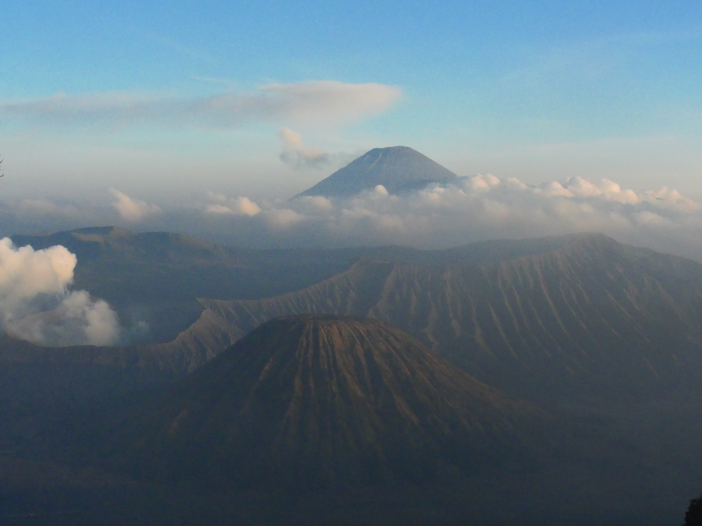
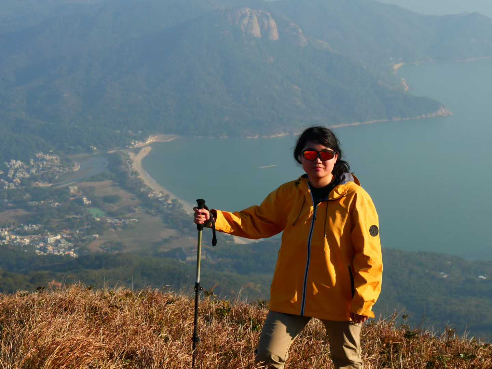
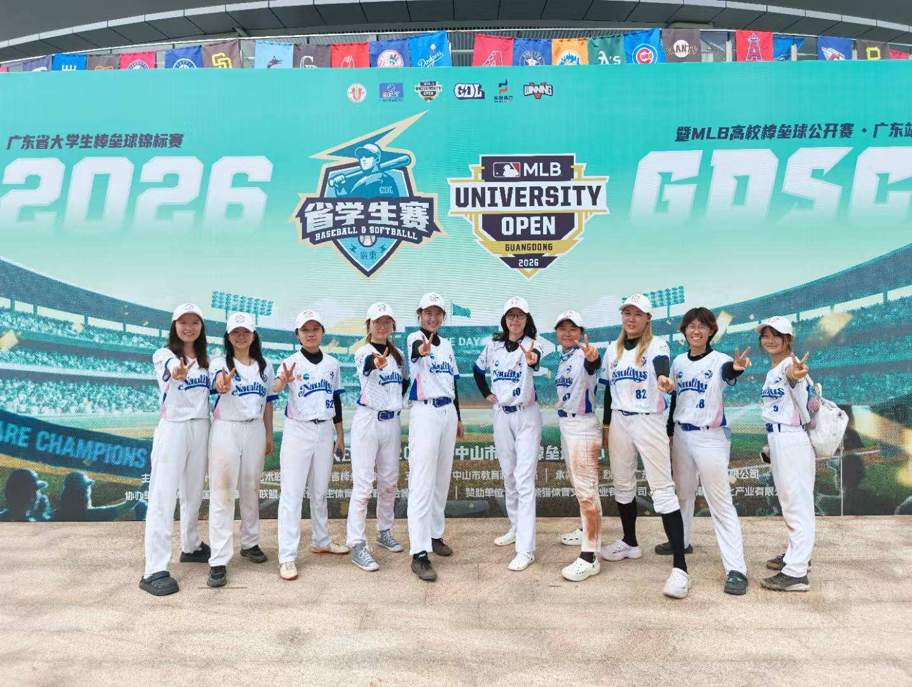
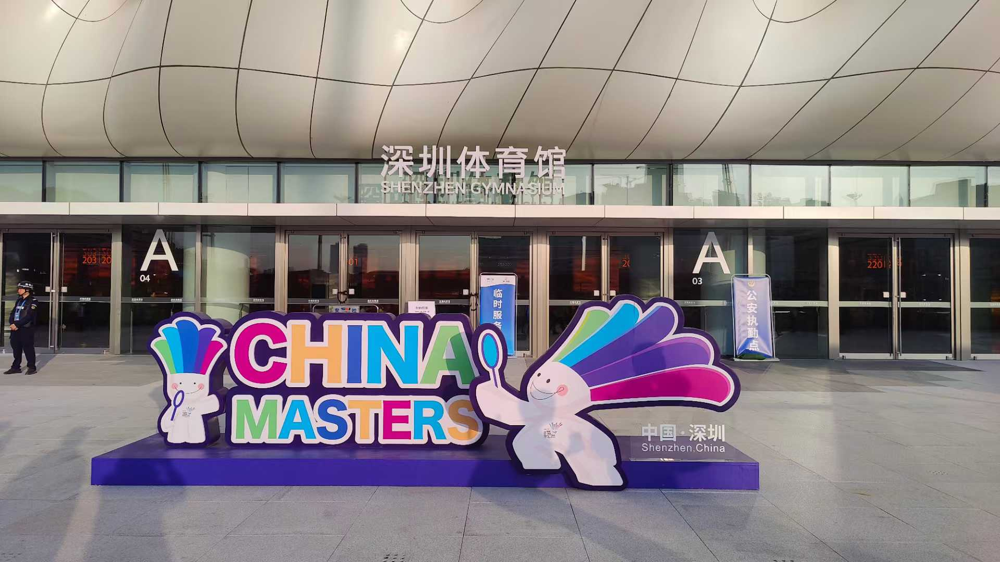

Outside research, I am most likely to be found on a baseball field, somewhere in the mountains, or wandering
through a park. I enjoy landscape photography, hiking, baseball&softball, swimming, badminton, and exploring
new places.
These activities give me a different way to observe the world and help me stay curious beyond academic work.

Photography Landscape and travel photography. Still learning, still
exploring.

Hiking Mountains, coastlines, and long walks. Nothing is more relaxing
than spending time in nature.

Baseball Every strikeout is a chance to reflect, adjust, and step up
to the plate again. Baseball reminds me to learn from failure and gives me the courage to start
again.

Badminton A long-term hobby since childhood. I have also been
exploring more racket sports, such as pickleball, tennis, and table tennis.